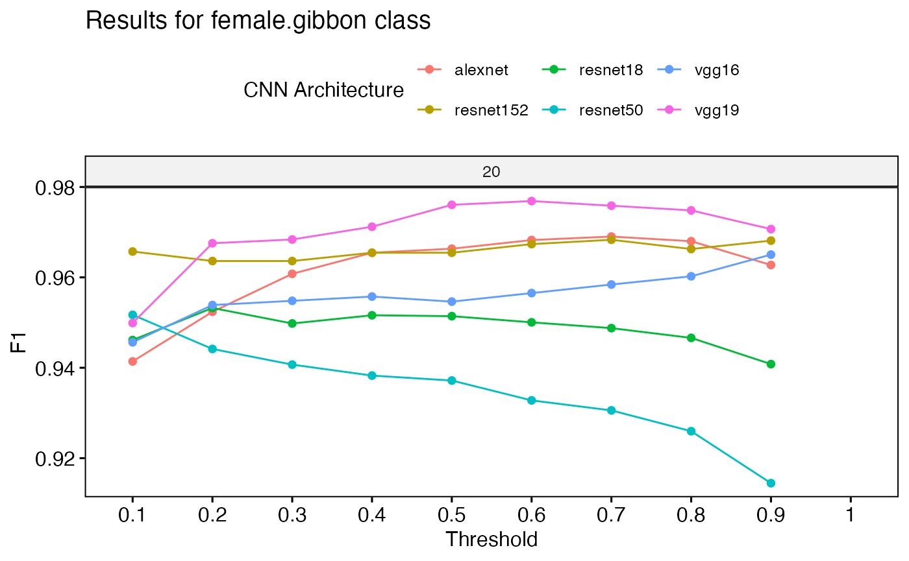

The package and manuscript are currently under review in JOSS.
Current citation: Clink, D. J., & Ahmad, A. H. (2024). gibbonNetR: an R Package for the Use of Convolutional Neural Networks and Transfer Learning on Acoustic Data. EcoEvoRxiv. https://doi.org/10.32942/X2G61D
The script below shows how to train multiple CNN architectures. The number of epochs is set to 20. This script may take a very long time to run, depending on your computer. You can try with the less complex architectures, like AlexNet, VGG16, and ResNet18 if the time to train is prohibitive.
This example assumes you have downloaded and prepared the multiclass data as explained here: https://denajgibbon.github.io/gibbonNetR/articles/a01b-GettingStarted.html.
# Location of spectrogram images for training
input.data.path <- 'data/trainingimages/'
# Location of spectrogram images for testing
test.data.path <- 'data/testimages/test/'
# User specified training data label for metadata
trainingfolder.short <- 'danummulticlassexample'
# Specify the architecture type
architectures <- c('alexnet', 'vgg16', 'vgg19', 'resnet18', 'resnet50', 'resnet152')
# We can specify the number of epochs to train here
epoch.iterations <- c(20)
for(a in 1:length(architectures)){
# Function to train a multi-class CNN
gibbonNetR::train_CNN_multi(input.data.path=input.data.path,
architecture =architectures[a],
learning_rate = 0.001,
class_weights = rep((1 / 5), 5),
test.data=test.data.path,
unfreeze.param = TRUE,
epoch.iterations=epoch.iterations,
save.model= TRUE,
early.stop = "yes",
output.base.path = "model_output/",
trainingfolder=trainingfolder.short,
noise.category = "noise")
}The script below will compare the performance of multiple models. Note that the script above saves the performance tables in a nested folder ‘performance_tables_multi’.
performancetables.dir <- "model_output/_danummulticlassexample_multi_unfrozen_TRUE_/performance_tables_multi"
PerformanceOutput <- gibbonNetR::get_best_performance(performancetables.dir=performancetables.dir,
class='female.gibbon',
model.type = "multi",Thresh.val=0)
PerformanceOutput$f1_plot
To analyze how the trained model represents data, we extract feature embeddings using extract_embeddings(). These embeddings capture high-level feature representations learned by the model.
ModelPath <- "model_output/_danummulticlassexample_multi_unfrozen_TRUE_/_danummulticlassexample_20_resnet50_model.pt"
result <- gibbonNetR::extract_embeddings(test_input="data/examples/test/",
model_path=ModelPath,
target_class = "female.gibbon")